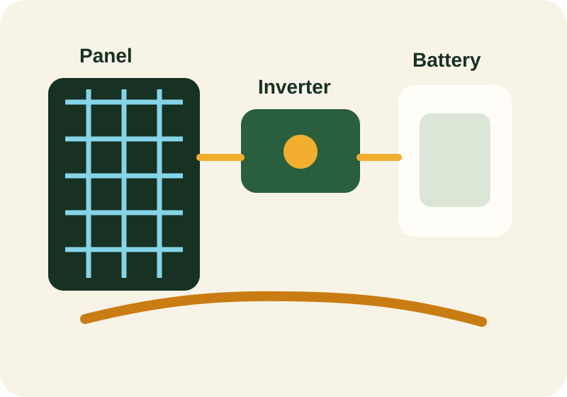

Alternating current (AC)
Electric current that changes direction periodically. Most homes and buildings use AC power.
Reference
Use this page to review important words and concepts that appear across the site. The glossary is meant to support study, revision, and class discussion.

Page progress
Mark this page complete once you can explain the major terms without rereading every definition.
A to D
Electric current that changes direction periodically. Most homes and buildings use AC power.
The amount of time a battery-backed system can supply loads without fresh charging input.
Electronics that monitor and protect battery cells, especially in lithium battery packs.
A device that regulates how electricity from the solar array charges the battery.
The percentage of a battery's stored energy that has been used relative to full charge.
Electric current flowing in one direction. Solar panels normally produce DC electricity.
E to M
The fraction of input energy converted into useful output energy.
A solar system connected to the public electricity network.
A system that combines solar with batteries and usually grid or generator support.
A device that converts DC electricity into AC electricity and may also manage energy flow.
The power of solar radiation falling on a surface, usually expressed per unit area.
Maximum power point tracking, a control method that extracts more useful energy from solar modules.
N to Z
The remaining demand after local solar production has already supplied part of the load.
A simplified measure used to estimate daily solar energy resource at a site.
The physical process that allows certain materials to convert light into electricity.
The percentage of stored battery energy that can be delivered after charging and discharging losses.
Production reduction caused by trees, buildings, tanks, poles, or dirt blocking sunlight.
Loss of electrical potential along a cable run, often caused by undersized conductors or long distances.